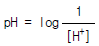
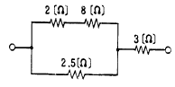

인쇄기능사 (2003-10-05 기출문제)
1과목: 임의구분
1. 색의 진출, 후퇴에 대한 설명으로 틀린 것은?
- 난색계는 한색계보다 진출성이 있다.
- 배경색의 채도가 낮은 것에 대하여 높은 색은 진출한다.
- 배경색과의 명도차가 큰 밝은 색은 진출한다.
- 명도가 높은 색보다 낮은 색은 진출한다.
(정답률: 알수없음)

2. 밝은색(흰색)위에서의 회색은 어둡게 보이고 어두운색(흑색)위의 회색은 밝게 보인다. 무슨 대비 현상인가?
- 보색대비
- 색상대비
- 채도대비
- 명도대비
(정답률: 알수없음)
3. pH를 상용 로그로 나타내면

이다. 여기에서 [H+]가 10-1이면 pH는 얼마인가?- pH 7
- pH 5
- pH 3
- pH 1
(정답률: 알수없음)
4. 종이의 pH값으로 보아 잉크의 건조 시간이 가장 짧은 것은?
- pH 6.9
- pH 5.5
- pH 5.0
- pH 3
(정답률: 알수없음)
5. 인쇄물의 인쇄 효과를 손상시키지 않고 내구성을 증가시키는 비닐액(무색투명)을 사용하는 표면 가공 방법은?
- 광택니스칠
- 비닐코팅
- 비닐필름 입히기
- 왁스칠
(정답률: 알수없음)
6. 다음 설명 중 틀린 것은?
- 색상오차가 적을수록 이상적인 잉크에 가깝다.
- 그레이니스가 적을수록 채도가 높다.
- 3색 잉크 중 비교적 이상적인 잉크에 가까운 색은 Magenta색이다.
- GATF에서는 반사농도계로 농도값을 측정하고 이것으로부터 색상오차, 회색도, 색효율의 값을 구하여 잉크를 평가한다.
(정답률: 알수없음)
7. 일반적으로 pH값을 측정하는 2가지 방법은?
- 지시약에 의한 방법, 전기적 방법
- 지시약에 의한 방법, 접촉각에 의한 방법
- 전기적 방법, 접촉각에 의한 방법
- 이온적 방법, 계면활성제에 의한 방법
(정답률: 알수없음)
8. 정전기에 관한 설명이 맞는 것은?
- 전기적으로 중성인 대전체가 전하를 가지게 되는 것으로 전하라고도 함
- 두 전하 사이에 작용하는 힘
- 어떤 물질이 양(+)전기나 음(-)전기를 띠는 현상
- 대전에 의하여 얻어진 전하가 절연체 위에서 더 이상 이동하지 않고 정지하고 있는 것
(정답률: 알수없음)
9. 저항이 50[Ω ]인 도체에 100[V]의 전압을 가할 때, 도체에 흐르는 전류는?
- 1[A]
- 2[A]
- 3[A]
- 4[A]
(정답률: 알수없음)
10. 연포장가공시 주머니 제조법 중 투명재료와 알루미늄박이 들어간 재료를 사용하며, 니크롬선에 순간적으로 전류를 흘려 그 때의 발열로 접착하는 방법은?
- 초음파 접착법
- 전기 접착법
- 열 접착법
- 인펄스 접착법
(정답률: 알수없음)
11. 다음 회로의 합성저항[Ω]은?

- 2
- 5
- 12.5
- 15.5
(정답률: 알수없음)
12. 플렉소(flexographic)인쇄에는 주로 어떤 판이 사용되는가?
- 감광성수지 볼록판
- 스크린 공판
- 알루미늄 평판
- 그라비어 오목판
(정답률: 알수없음)
13. 실로 맨 속장을 다듬 절단하여 두꺼운 표지로 싸는 제책 방식은?
- 호부장
- 무선철
- 양장
- 중철
(정답률: 알수없음)
14. 다음 인쇄방식 중 광화학에 의한 평판식 인쇄에 가장 알맞는 것은?
- 석판 인쇄
- 금속평판 인쇄
- 전기판에 의한 인쇄
- 콜로타이프법에 의한 인쇄
(정답률: 알수없음)
15. 그라비어 인쇄물의 특징이 아닌 것은?
- 속건성잉크를 사용하기 때문에 고속인쇄를 할 수있다.
- 인쇄할 때 속도를 자유롭게 조절 할 수 없다.
- 포지티브 필름만 있으면 언제든지 다시 제판할 수있다.
- 두루마리 용지를 사용하여 인쇄할 수 있다.
(정답률: 알수없음)
16. 원색 인쇄 잉크 중에서 광택에 중점을 두고 제조한 잉크는?
- 퀵셋트 잉크
- 수지형 잉크
- 글로스 잉크
- 아마인유형 잉크
(정답률: 알수없음)
17. 잉크의 조성 중 비히클(Vehicle)의 역할이 아닌 것은?
- 잉크의 유동성 부여
- 안료를 분산 시킴
- 잉크 피막 형성
- 잉크 농도 부여
(정답률: 알수없음)
18. 잉크 사용량과 가장 관계없는 것은?
- 판의 화선면적
- 종이질
- 인쇄량
- 종이 두께
(정답률: 알수없음)
19. 종이를 순백 불투명으로 치밀, 평활하게 하는 공정은?
- 고해
- 초지
- 전충
- 사이징
(정답률: 알수없음)
20. 제지과정 중 사이징(sizing)이란?
- 펄프를 물속에서 기계적으로 분산시키는 조작
- 섬유사이의 틈을 광물질의 분말로 메우는 조작
- 섬유에 소수성을 갖게 하는 조작
- 윤내는 작업 과정
(정답률: 알수없음)
2과목: 임의구분
21. 컴파운드(compound)의 역할이 아닌 것은?
- 잉크의 작용과 굳음을 개선한다.
- 뒤묻음, 달라 붙음, 뜯김 등의 사고를 방지한다.
- 컴파운드를 많이 넣어 잉크의 건조를 촉진시킨다.
- 니스의 응집성과 점착성을 감소시켜 겔 형성을 방지한다.
(정답률: 알수없음)
22. 인쇄된 종이의 불투명도 부족 때문에 인쇄된 부분이 뒷면에 비쳐 보이는 것은?
- Strike through
- Show through
- Piling
- Picking
(정답률: 알수없음)
23. 평판(PS판)에 주로 사용하는 판재는?
- 강철판
- 고무판
- 수지판
- 알루미늄판
(정답률: 알수없음)
24. 알루미늄판의 표면처리제로 사용되는 것은?
- 크로나크액
- 브루낙액
- 아라비아 고무액
- 나이탈액
(정답률: 알수없음)
25. 주로 잉크의 점도가 강하고 종이의 표면강도가 낮아 발생되는 것은?
- 고스트(Ghost)
- 피킹(Picking)
- 히키(Hicky)
- 모틀링(Mottling)
(정답률: 알수없음)
26. 평판잉크가 구비할 조건이 아닌 것은?
- 농도가 높을 것
- 물에 잘 녹고 화학적 변화가 적을 것
- 올바른 색상을 가질 것
- 광택이 있을 것
(정답률: 알수없음)
27. 축임물 pH의 조절을 위하여 사용되는 용액은?
- 인산
- 염산
- 수산화나트륨
- 암모니아수
(정답률: 알수없음)
28. 오프셋 인쇄시 축임물을 사용하는 까닭은?
- 잉크 건조의 촉진
- 잉크의 유화 촉진
- 잉크 농도의 유지
- 비화선부의 잉크 묻음 방지
(정답률: 알수없음)
29. 높은 순도의 화학 펄프를 사용, 감광제에 악영향을 주는 물질을 포함하지 않도록 초지한 원지에 순도가 높은 황산바륨(BaSO4)안료와 젤라틴으로 되는 도료를 도포하여 만들며 강광택기로 가공한 매끄러운 종이로서 사진 인화지용 원고로 사용되는 것은?
- 크라프트지
- 증권용지
- 버라이터지
- 모조지
(정답률: 알수없음)
30. 세밀한 망점판 인쇄시 가장 중요시 되는 종이의 물리적인 성질은?
- 인열강도
- 평활도
- 내절강도
- 인장강도
(정답률: 알수없음)
31. 자동 인쇄기에 있어 공통점이 아닌 것은?
- 자동급지 장치가 부속되어 있다.
- 자동정지 장치가 있다.
- 조작이 쉽다.
- 속도가 빠르므로 정밀도가 낮다.
(정답률: 알수없음)
32. 오프셋 인쇄기의 주요 3통에 들지 않는 것은?
- 판통
- 압통
- 잉크통
- 블랭킷통
(정답률: 알수없음)
33. 진공식 급지기 중 버클러(buckler)가 있는 피더는?
- 덱스터 피더
- 유니버설 피더
- 로우터리 피더
- 스트림 피더
(정답률: 알수없음)
34. 오프셋 윤전기에 사용하는 건조기의 일반적인 방식이 아닌 것은?
- 직화방식
- 열풍방식
- 냉풍습풍병용방식
- 직화열풍병용방식
(정답률: 알수없음)
35. 3통의 인쇄 유닛을 일렬로 배치하여 한쪽에서 종이를 통과시켜 차례대로 중첩 인쇄를 하게 되어 있는 오프셋 윤전기의 형식은?
- 오픈형
- 드럼형
- B-B형
- 2통형
(정답률: 알수없음)
36. 판을 실린더에 걸 때 옳지 않은 작업 방법은?
- 판두께를 잰다.
- 실린더의 기준선에 맞추어서 건다.
- 판이 늘어나지 않도록 조인다.
- 판 조임쇠를 양끝에서 중앙으로 조여온다.
(정답률: 알수없음)
37. 다음 중에서 급유를 함으로서 나타나는 효과가 아닌것은?
- 감마(減磨)효과
- 냉각(冷却)효과
- 응력분산 효과
- 계면장력 효과
(정답률: 알수없음)
38. 통꾸밈의 기준이 되는 것은?
- 베어러
- 기어
- 축
- 캠
(정답률: 알수없음)
39. 디크네스(thickness) 게이지로 측정할 수 없는 것은?
- 베어러와 베어러와의 간격
- 판통과 습수 묻힘롤러와의 접촉 상태
- 패킹의 두께
- 롤러와의 접촉 상태
(정답률: 알수없음)
40. 블랭킷의 세척액으로 가장 적당한 것은?
- 클리너
- 사염화탄소
- 아세톤
- 이황화탄소
(정답률: 알수없음)
3과목: 임의구분
41. 그리퍼 조절불량으로 인한 고장과 가장 관계가 없는 것은?
- 맞춤불량
- 종이의 찢어짐
- 해상력 저하
- 종이의 주름발생
(정답률: 알수없음)
42. 롤러가 번들번들 해져서 잉크가 잘오르지 않는 현상은?
- 뒷묻음(setoff)
- 쵸킹(chalking)
- 스커밍(scumming)
- 그레이징(greasing)
(정답률: 알수없음)
43. 안전작업이 필요한 이유 중 가장 관계가 없는 것은?
- 인명피해를 예방할 수 있다.
- 생산성이 감소된다.
- 설비의 손실을 감소할 수 있다.
- 생산재의 손실을 감소할 수 있다.
(정답률: 알수없음)
44. 오프셋 인쇄기 중 인쇄하기 전에 종이를 추리거나 꺽지 않아도 되는 기계는?
- 오프셋 교정기
- 단색 매엽인쇄기
- 두루마리 윤전인쇄기
- 8절 소형인쇄기
(정답률: 알수없음)
45. 배지장치에서 종이추림을 어렵게 하는 원인은?
- 축임물이 많아서
- 종이 탄성이 강해서
- 잉크 건조가 빨라서
- 종이 평활도가 높아서
(정답률: 알수없음)
46. 두루마리의 장력을 조절하는 것은?
- 댄서롤러
- 유니트
- 루프
- 미터링롤러
(정답률: 알수없음)
47. 블랭킷(blanket)통이나 판통에 패킹을 하는 이유가 아닌것은?
- 각 실린더의 표면회전속도를 같게 하기 위해서
- 적당한 인쇄 압력을 주기 위해서
- 판통과 묻힘롤러간에 적당한 탄력성을 주기 위해서
- 블랭킷통에 알맞는 탄력성을 주기 위하여
(정답률: 알수없음)
48. 급지가 되어 종이가 줄면 적지대가 일정한 위치에 까지 자동적으로 조절이 되도록 하는 기구는?
- 래칫기어
- 레벨러
- 블러워
- 빗바퀴
(정답률: 알수없음)
49. 본인쇄 중의 점검 사항이 아닌 것은?
- 잉크량의 과부족
- 가늠상태
- 더러움
- 색배합
(정답률: 알수없음)
50. 오프셋 인쇄기의 구조를 3부분으로 나눈 것은?
- 급지부,인쇄부,배지부
- 판통,블랭킷통,압통
- 습수장치,잉크장치,판걸이장치
- 동력전달장치,습수장치,잉크장치
(정답률: 알수없음)
51. 별도의 습수 Roller가 없이 물과 잉크가 동시에 공급되는 장치는?
- 연속 축임물 장치
- 달그렌 축임물 장치
- 재래식 축임물 장치
- 솔 축임물 장치
(정답률: 알수없음)
52. 다음 중 습수(濕水)의 역할이 아닌 것은?
- 알맞는 pH를 유지하여 잉크의 더러움을 방지
- 습수의 온도를 콘트롤하여 저온(低溫)을 유지, 판의 더러움을 방지
- 습수에 혼입하는 더러움, 기름끼 등을 여과하여 인쇄 중에 항상 깨끗한 물을 공급
- 습수의 량을 적게하여 판의 피로도를 억제, 내쇄력을 증진시킴
(정답률: 알수없음)
53. 인쇄 장치를 1세트(set)갖춘 기계로서 매엽지로 1회 종이를 통과 시켜 한쪽면만 인쇄가 되었다면 기계의 명칭이 어떻게 되는가?
- 매엽 단색 인쇄기
- 윤전 다색 off set 인쇄기
- 매엽 양면 인쇄기
- 양면 다색 인쇄기
(정답률: 알수없음)
54. 인쇄기계 전반의 정비사항 중 매일 점검을 하지 않아도 되는 곳은?
- 인쇄기계의 주변 정리
- 인쇄기계 공구의 정리
- 전류치, 압력, 온도 확인
- 주모터의 그리스 급유
(정답률: 알수없음)
55. 인쇄 도중에 발생하는 기계의 진동 원인에 대한 설명 중 가장 거리가 먼 것은?
- 기계의 수평이 맞지않음
- 실린더가 평행하지 않음
- 축임물의 부족
- 기계의 현재 성능에 비해서 회전이 너무 빠름
(정답률: 알수없음)
56. 접지 장치의 요소가 아닌 것은?
- 슬리터(sliter)
- 터닝바(turning bar)
- 포머(former)
- 스윙그리퍼(swing gripper)
(정답률: 알수없음)
57. 판 또는 블랭킷의 표면에 딱딱한 물질이 부착되어 주위에 흰 줄로 나타나는 현상은?
- 히키(hickey)
- 피킹(picking)
- 스티킹(sticking)
- 고스트(ghost)
(정답률: 알수없음)
58. 다음 중 인쇄기를 고속으로 회전시키기 위하여 사용하는 스위치를 순서대로 표시한 것은?
- 저속 스위치-준비 스위치-완동 스위치-고속 스위치
- 완동 스위치-준비 스위치-저속 스위치-고속 스위치
- 준비 스위치-완동 스위치-저속 스위치-고속 스위치
- 완동 스위치-저속 스위치-준비 스위치-고속 스위치
(정답률: 알수없음)
59. 다음 중 잉크 장치에서 일상적으로 점검해야 할 사항이 아닌 것은?
- 잉크 묻힘롤러와 판 사이의 접촉 압력
- 이전의 인쇄 작업에서 사용한 잉크의 세척 상태
- 몰턴의 세척 상태
- 고무롤러의 표면 상태
(정답률: 알수없음)
60. 다음 중 기계에 사용하는 안전 커버의 설치 목적이 아닌것은?
- 가공물이나 공구 등의 낙하에 의한 위험 방지
- 위험 부위에 인체의 접촉 또는 접근 방지
- 주유나 검사의 편리성
- 방음 및 집진
(정답률: 알수없음)